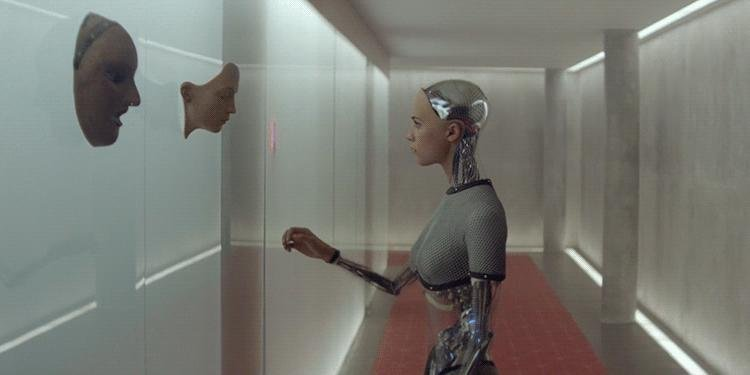

Call for Papers
FAISE'18:
Frontiers in AI and Software Engineering
HICSS-51 Jan3-6, 2018, Hilton Waikoloa Village, Big Island
Conference web site: http://hicss.hawaii.edu/tracks-and-minitracks/
Venue web site: http://www.hiltonwaikoloavillage.com
Minitrack chair: Tim Menzies (NC State), tim.menzies@gmail.com
This minitrack welcomes papers not only on the application of AI techniques to SE problems but also the application of SE techniques to AI problems.
The motivation for the meeting is the following question:
"What is role of AI in the future of software engineering?"
In the last decade AI has gone from a minor side technology to one of the dominate drivers in technological innovation on the planet. If we look ahead 5,10,20 years:
- Will there even be programmers?
- Or will software engineering become (say) dropping a specification into some use AI-driven cloud machine that returns for our inspection and selection, hundreds of variants of potential solutions?
So it is time to ask, in this age of Google AI, and text miners that can read our texts better than us, and program synthesis agents that can code better than us, and data miners that can look at more information that
we can:
-
what is the future role of software engineers?
- What parts of SE should we willingly and quickly discard and what parts should be always keep and preserved into the future?
Instructions to authors
FAISE'18 is NOT a venue requiring rigiourous and tedious
proof and/or evaluation
of the submitted ideas (goodness knows, there are enough of those).
Instead, FAISE'18 is a venue to explore "over the horizon"
research ideas. Here, we brainstorm; speculate; review past results
at an ultra-high-level; while at the same time try
to imagine the future and our role in creating it.
So feel free to dream a little.
Submission and Formatting
Submit to:
https://confs.precisionconference.com/~hicss/
Formatting instructions: For full details, please see
http://hicss.hawaii.edu/tracks-and-minitracks/authors
In summary:
-
Submit PDF, 10pt, two column, Times font;
Abstract of 150 words;
- Max length 10 pages (including all references and figures)
and 5 page papers (with cool spectulations) are most welcome!
Important Dates
- June 15, 2017 : Submission
- August 17, 2017 : Notification
- September 22, 2017 : Camera ready
- October 1, 2017 : One author of each paper must register for HICSS-51.
Organization
Program committee:
- Barry Boehm, USC, USA
- Olga Baysal, Carleton University, Canada
- Wei Fu, NC State, USA
- Mike Godfrey, U.Waterloo, Canada
- Rachel Harrison, Oxford Brookes, UK
- Mark Harman, University College, UK
- Daniel Jackson, MIT, USA
- Tim Menzies, NC State, USA
- Vivek Nair, NC State, USA
- Justyna Petke, University College, UK
- Dan Port, U.Hawaii , USA
- Barbara Russo, UNIBZ, Germany
- Burak Turhan, Brunel University, UK
|
{kind=link}